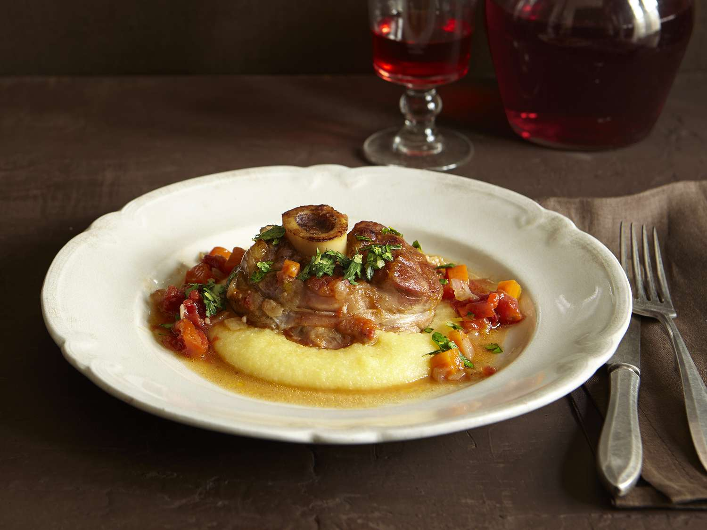

Home
Osso-Buco

Description
Osso buco is an Italian dish of braised veal shanks, which are cross-cut from the leg bone beneath the knee and shoulder. The shank is a tougher cut of meat, so slow cooking in liquid is essential for the melt-in-your-mouth texture that osso buco is known for.
The dish, a staple of Lombard cuisine, is traditionally garnished with gremolata (a green, herbaceous sauce with lots of bright flavor).
Ingredients
- 4 pounds veal shanks, cut into short lengths
- ½ cup all-purpose flour
- ½ cup butter
- 4 cloves garlic, crushed
- 2 large onions, chopped
- 2 large carrots, chopped
- 1 ⅓ cups dry white wine
- 1 ⅓ cups beef stock
- 2 (14.5 ounce) cans diced tomatoes
- Salt and pepper to taste
Gremolata:
- 1 cup chopped fresh flat leaf parsley
- 2 clove garlic, minced
- 4 teaspoons grated lemon zest
Steps
- Gather all ingredients.
- Dust the veal shanks lightly with flour.
- Melt the butter in a large skillet over medium to
medium-high heat. Add the veal, and cook until browned
on the outside. Remove to a bowl, and keep warm
- Add two cloves of crushed garlic and onion to the
skillet; cook and stir until onion is tender.
- Return the veal to the pan and mix in the carrot
and wine. Simmer for 10 minutes.
- Cover, and simmer over low heat for 1 1/2 hours,
basting the veal every 15 minutes or so. The meat
should be tender, but not falling off the bone.
- In a small bowl, mix together the parsley, 1
clove of garlic and lemon zest. Sprinkle the
gremolata over the veal just before serving.